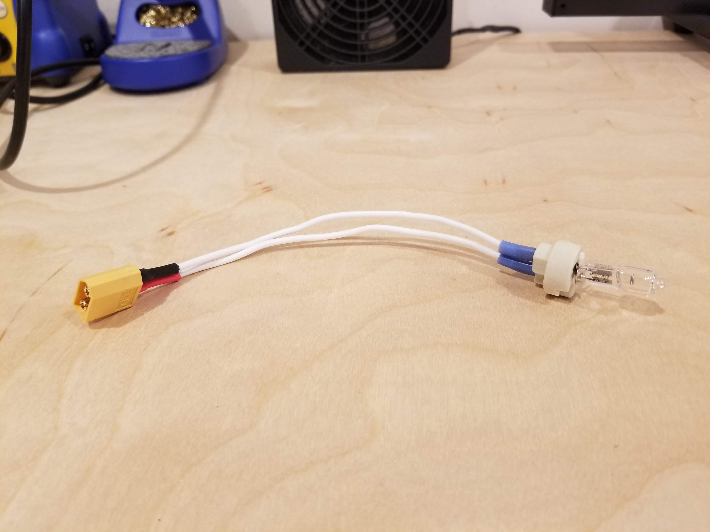

Lithium Polymer (LiPo) batteries are a serious safety concern for hobbyists. Especially, once they have been cycled so many times or are victim to a crash and begin to puff up. If your LiPo appears puffy or can’t seem to hold a charge anymore, it’s time to dispose of it. You can’t simply throw it in your trash can, a fire could start immediately. You must go through a procedure of safely discharging the battery to 0.0V and taking the discharged battery to a proper disposal center.
First item of concern is getting an unstable LiPo down to holding no charge at 0.0V. This is done by giving the battery a load to work across until all charge has been expelled. Here are some separate methods of accomplishing that. A note before going over different methods it to be sure that you discharge your LiPos in a safe location, preferably outside in a location that is somewhat heat resistant. I personally use an old 30 cal. ammo can with air ventilation (Some people call this a battery bunker). However, you can use a LiPo safe bag or a cinder block chamber, anything that will prevent a fire from spreading should a LiPo burst into flames.
Many battery charges on the market today have a discharge function. Making it a simple as setting the battery charger function to “Discharge” and setting the current to a low 0.5A-1.0A (No rush, the LiPo is most likely already very unstable).Most of these chargers however will not discharge the battery completely. It will bring the battery down to a minimum voltage, but not bring it down so low that it would, under normal circumstances, cause damage to the LiPo.Your charger will tell you that these batteries are dead however verify this with a multimeter. If the meter does not read 0.0V then try one of the other methods to discharge the battery 100%.
The idea to discharge the battery is to give the battery a load to work across and send its coulombs to work. You can make a discharger of your own by giving the battery a dummy load to work with whether that be a halogen lightbulb or a resistor. I prefer using a halogen lightbulb because the light that the bulb emits is an excellent visual indicator of remaining charge. If the lightbulb is on, there is charge. If the lightbulb is off, no charge.The reason for a halogen bulb is due to the fact that the bulb is very inefficient, it will use up charge much faster than anything else. Using an LED as the load will only draw about 200mA depending on the LED used, too efficient!A 12V 20W bulb will suffice but be aware that the battery is going to get very hot during this process.The lightbulb discharger is constructed by connecting an XT-60 connector (or whichever connector you use) to the leads of a halogen lightbulb. Of course, be sure positive goes to positive and ground goes to ground. I would not solder directly to leads of the bulb. This will work but to make it easier to replace the bulb I used a G4 socket meant for halogen bulbs like the one used.This setup should be good for LiPos up to 3S and 4S and you can add more lights in parallel to increase the draw.One that’s all build just plug in your LiPo to the connector and wait till the bulb goes out. Once it’s out verify that the charge is 0.0V with a multimeter and there you go! Simple. As previously stated, the discharge process will get hot so be sure you are discharging in a safe, heat resistant location.
This is a different method for discharging where you completely submerge your battery in a solution of water and salt (Ratio of water to salt is about 10:1). This process will take much longer then any other and I do not personally recommend it, however, it deserved to be mentioned for its popularity.
This is an old rumor. DO NOT DO THIS!
Now that the battery is discharged completely and reads 0.0V on a multimeter, you can now dispose of the battery. Some people save the connectors and solder the two leads of the battery together to ensure that any minute remaining charges is gone.You have options of where to take your dead batteries:Take to a hobby shopSome hobby shops will have a place for discharged LiPos where they will later properly dispose of. Take to a disposal centerCheck your city’s website about this one. It is not uncommon for the task of battery disposal to be contracted to a store or junkyard.Put it in the trashExpress extra caution with this one. Check all relevant laws in your area before putting your LiPo in the trash.

Here's the discharge bulb I have set up. This along with the battery are kept in an ammo can in the event the discharge results in an explosion.